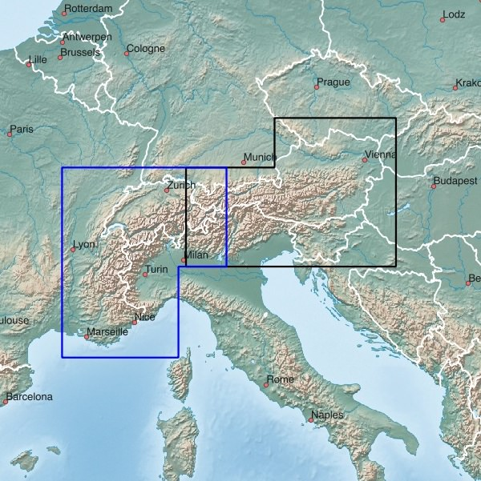
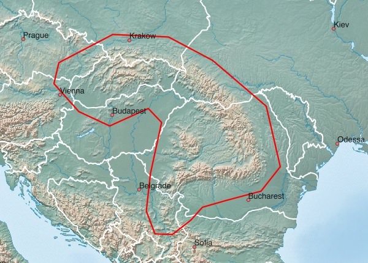
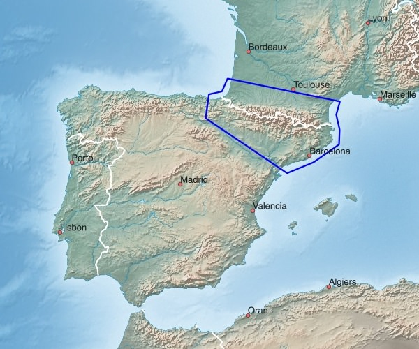

Hinweise zum Download:
- Klick auf das Netbook Icon im PC-Browser: die Karte wird auf den Personal-Computer geladen
- Klick auf das Locus Map Icon im Android-Browser: Karte+Design werden nach Locus Map geladen
Die Alpen:

| ← | Alpen (Ost) (alps_east) 675 MB |
→ | ||
| ← | Alpen (West) (alps_west) 774 MB |
→ |
Die Karpaten:

| ← | Karpaten 493 MB |
→ |
Die Pyrenäen:

| ← | Pyrenäen 219 MB |
→ |